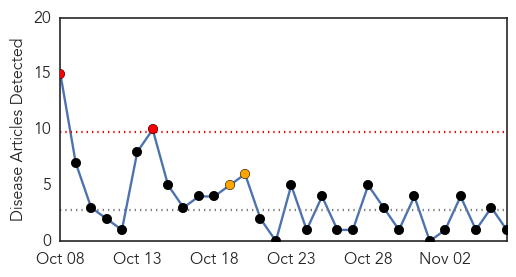
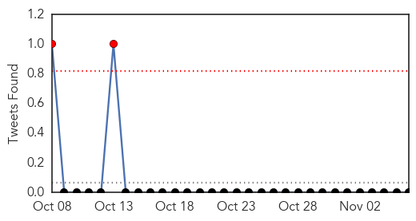
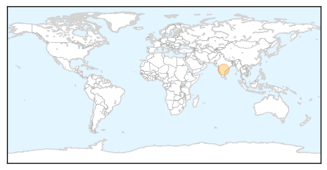

Swine Flu
30-Day Web Trend
2 alerts, 2 warnings

30-Day Twitter Trend
2 alerts, 0 warnings

Article Locations
Article Confidences

Top Articles:
Top Tweets:
-
No tweets found for Nov 06, 2015
Unknown
30-Day Web Trend
1 alerts, 0 warnings

30-Day Twitter Trend
1 alerts, 0 warnings
Article Locations

Article Confidences
Top Articles:
- 0.998
- Health take-away: Flu season is here — get vaccinated
- 0.968
- Almost Everyone Has Herpes, But How Worried Should We Be?
- 0.965
- Deadly disease still unidentified in North Darfur's Saraf Umra - Sudan
- 0.955
- Oregon school pumpkin carving party suspected in norovirus outbreak — Health — Bangor Daily News — BDN Maine
- 0.941
- Escherichia coli O26 Infections Linked to Chipotle Mexican Grill Restaurants
- 0.920
- Multistate Foodborne Illness Outbreaks Cause Most Deaths
- 0.917
- Chipotle restaurants shut down following E-coli outbreak
- 0.903
- Chipotle E. Coli Outbreak Widens In Washington And Orgeon
- 0.886
- Children get covered against flu
- 0.883
- Five Health Care Tools to Save Lives in Africa
- 0.808
- San Jose Mexican restaurant linked to shigella outbreak to reopen
- 0.798
- Kingsport Times-News: Wellmont, Mountain States partner with other health organizations to discuss dangers of antibiotic overuse
- 0.778
- Estudios recientes demuestran que los arándanos son eficaces para ayudar a reducir el uso de antibióticos
- 0.769
- The most from the coast
- 0.764
- Rising number of shigella cases in KC raises concerns
- 0.756
- Canterbury superbug patients a 'frightening sign'
- 0.752
- CDC says recent foodborne outbreaks, like Chipotle's, have been bigger and deadlier than in the past
- 0.730
- Anti-capitalist activists clash with police in London
- 0.722
- Superbugs mean more infections and deaths after surgery, chemotherapy
- 0.721
- Increasing scarcity of safe drinking water
- 0.706
- Rabies, the proper approach – Lim Li Lian
- 0.702
- Egypt plays down terrorist theory in Russian plane crash
- 0.702
- Black box confirms explosion on Russian plane, says French media
- 0.682
- New Blood Test Could Detect Kidney Disease Early
- 0.677
- Court dismisses first lawsuit filed over gov't handling of MERS
- 0.673
- Countries Spending the Most on Health Care
- 0.668
- Sample of High Hill apple juice from patient tests positive for E. coli
- 0.652
- Drug resistant Strep and the return of the scarlet fever
- 0.649
- B.C. health workers renew battle against flu season masks
- 0.645
- Multistate outbreaks of foodborne disease affect thousands
- 0.642
- Ruling party candidate takes lead in Haiti presidential runoff
- 0.642
- Are wine and cigarettes the secret to French longevity?
- 0.635
- WHO says TB now kills as many as AIDS
- 0.629
- Latest: 40 with E. coli O26 from Oregon and Washington Chipotle Restaurants
- 0.627
- Management of malignant pleural mesothelioma: a French multicenter retrospective study (GFPC 0802 study)
- 0.616
- Malaria Fight in Hispaniola Requires Tailored Approach « Carter Center Blog
- 0.614
- Pet cat from Chimacum area found to have rabies; discovery marks first time in state since 2002 -- Port Angeles Port Townsend Sequim Forks Jefferson County Clallam County Olympic Peninsula Daily NEWS
- 0.609
- 'Holy moly, a tapeworm!' Man dies after parasite inside him developed cancer
- 0.604
- Salmonella, E. coli and Listeria Cause nearly All Multistate Foodborne
- 0.603
- Use of mustard gas in Syria conflict confirmed
- 0.603
- Intelligence points to ‘bomb in hold of Russian plane,’ say reports
- 0.599
- INTERNATIONAL: Country efforts lead the way toward malaria elimination in the Americas
- 0.597
- She Says the HPV Vaccine ‘Disabled’ Her Daughter
- 0.591
- City offers answers to PCB question by phone
- 0.589
- Review into patient death at Queen Elizabeth University Hospital in Glasgow
- 0.587
- TB 'joins HIV as most deadly infection'
- 0.570
- E. Coli Outbreak Shows Vulnerabilities Of Big Chains Using Local Food . News
- 0.568
- IMO wants updated SPHM contract
- 0.568
- Doctors reveal perils of hair pins, head lice and herbal medicine
- 0.566
- WHO Malaria Deaths Cases Plunge in Latin America
Showing top 50 articles...
Top Tweets:
- 0.756
- RT: "El Salvador está en línea de eliminación, en etapa de eliminación (paludismo)" destacó Víctor Mejía de https:…
- 0.687
- DíaMalariaAméricas coincide con el día en que malaria se observó por 1era vez en sangre de pacientes por Charles Alphonse Lavéran 1880
- 0.623
- RT: "Si me entero de que te pegan en la escuela, yo te voy a pegar más fuerte por pendejo". —La cura para el bullying de las …
- 0.585
- Esfuerzos de los países de las Américas lideran el camino hacia la eliminación de la malaria. - Dr. Espinal https://t.co/EjnNW9HYuQ
- 0.511
- RT: Eres más peligroso que Jhonny Depp en una tienda de disfraces
- 0.503
- RT: Llega ese momento, en el que tu cerebro ya se acostumbró a madrugar y te despiertas temprano todos los días. Y no es bonito…
- 0.502
- RT: Qué sabrás de dolor si nunca se te mojó un libro.